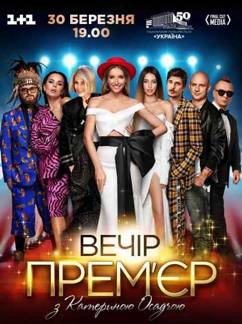

|
Анастасі́я Олексі́ївна Каме́нських (нар. 4 травня 1987, Київ) — українська співачка. Здобула популярність як учасниця гурту «Потап и Настя» (2006—2017). Після оголошення паузи гурту почала сольну кар'єру під псевдонімом NK. Життя і творчістьРаннні роки Народилася 4 травня 1987 року в Києві. Батько — Олексій Йосипович Жмур. Мати — Лідія Петрівна Каменських, працювала в Народному хорі ім. Верьовки. Хрещена мати — Алла Кудлай. У п'ять років поїхала до Франції за програмою обміну, де пробула два місяці. У шість років поїхала до Італії, де прожила сім років, вивчила італійську мову та відвідувала місцеву школу. У Києві навчалася в Печерській гімназії. У 15 років закінчила музичну школу за класом фортепіано. Вісім років професійно займалася танцями — балетом. Після школи вступила до Українсько-американського гуманітарного інституту, де викладання ведеться англійською мовою. Кар'єра співачки розпочалася у 2004 році, коли вона взяла участь у фестивалі «Чорноморські ігри».У 2005 році здобула в Лондоні нагороду UBN Awards як «відкриття року». 2006—2016: «Потап и Настя»Протягом 2006—2017 років NK була учасницею найпопулярнішого дуету серед російськомовного населення «Потап и Настя» разом з Потапом. Після спільного кліпу з репером на популярну пісню «Без любви» почалися концерти, зйомки та гастролі. Згодом дует зняв кліп на пісню «Не пара». Настю почали запрошувати на численні телевізійні зйомки. Навесні 2009 року Настя разом Дмитром Дікусаром брала участь у благодійному телевізійному проєкті «Танцюю для тебе», але невдовзі вони покинули проєкт через заплановані гастролі «Потапа та Насті» в Німеччині. У лютому 2010 року Настю було визнано «Найкрасивішою жінкою України 2009» за версією журналу «Viva». 2017—дотепер: сольна кар'єра та проєкт NKУлітку 2017 року стало відомо що Настя стане суддею восьмого сезону «X-Фактор» прем'єра якого відбулася восени на телеканалі СТБ. 24 жовтня у відео зверненні Настя разом з Олексієм Потапенком оголосила про творчу паузу дуету «Потап и Настя». Невдовзі стало відомо що Настя розпочинає сольну кар'єру, але вже під псевдонімом NK. 2 листопада вона випустила свій російськомовний кліп «#этомояночь», котрий зібрав мільйони переглядів на YouTube та став вірусним у соціальних мережах. У грудні випустила акустичну збірку різдвяних пісень та фільм «Xmas with NK», у якому вмістилися найпопулярніші різдвяні пісні чотирма мовами (українська, російська, італійська, англійська). 9 квітня 2018 року на «Вечорі прем'єр з Катериною Осадчою» NK заспівала першу україномовну пісню у своєму репертуарі «Тримай», а вже восени її презентували на найбільшій італійській радіостанції «Rai Radio». Наприкінці вересня вийшов іспансько-англійський трек «Peligroso» в жанрі latin pop, який вона написала в співавторстві із продюсером Ali Alvarez від компанії Magnus Media Марка Ентоні, композитором Cris Chil, багаторазовим переможцем Латиноамериканського Ґреммі Yoel Henriquez та Олексієм Потапенком. Незабаром NK відправилась у промотур до Маямі, де презентувала пісню в найпопулярніших Латиноамеринських теле- та радіо- програмах: «¡Despierta America!» на телеканалі Univision, «Total Acceso» та «Titulares y Más» на телеканалі Telemundo, «Buenos Dias Familia» на телеканалі EstrellaTV, «Centro» на телеканалі CBS, а також на телеканалі ¡Hola! TV та ін. Пісня Peligroso увійшла до рейтингу кращих 25 Тропічних пісень у категорії Латиноамериканської музики за версією видання Billboard, де вже перебуває шостий тиждень. Також, у рамках промотуру, NK відвідала 19 щорічну церемонію вручення Латиноамериканських Ґреммі і стала першим виконавцем з України, яка була туди запрошена. 29 Березня 2019 року вийшов офіційний ремікс та кліп на пісню Peligroso від зірки реггетону De La Ghetto сумісно із NK. 12 жовтня — вийшов сольний альбом «No Komments» і кліп до пісні «LOMALA». Включає 10 композицій українською, російською та англійською мовами. У грудні 2018 була представлена на M1 Music Awards у п'яти номінаціях. Здобула перемогу в категоріях «Співачка року» та «Кліп року», знятий на пісню «#этомояночь». Отримала нагороду Найкращої міжнародної зірки за версією ТРК «Україна». У лютому 2019 року вийшов кліп на пісню «Попа как у Ким» у кліпі до глядачів звернулися блогери проєкту «Чоткий Паца». Того ж місяця вона знялася для обкладинки українського Cosmopolitan. 25 квітня NK випустила музичне відео на свій другий українськомовний трек «Обіцяю», який вона презентувала 10 квітня на «Вечорі прем'єр з Катериною Осадчою». Пісня є освідченням у коханні загадкового обранця, якого співачка приховує від преси. За задумом режисерів Дениса Манохи та Максима Шелковникова, відео стало відтворення шедеврів великих художників різних епох. У відео вона постала в дев'яти образах, зокрема Мони Лізи, Фріди Кало, Олімпії з картини Мане та інші. Вже наступного місяця український репер та продюсер Потап 23 травня презентував музичне відео на пісню «Константа», у якій він освідчився в коханні до NK. 8 липня NK відкривала концерт колумбійського співака Малума під час його виступу в Палаці спорту в Києві. Того ж місяця вона виступила на музичному фестивалі «Atlas Weekend» у Києві та на російському фестивалі «Жара» в Баку (Азербайджан). ДискографіяСтудійні альбоми
Мініальбоми
Сингли
|
Анастасія Каменських Анастасія Олексіївна Жмур На фестивалі «Лайма. Рандеву», 2017 З Потапом на прес-конференції, 2009 На фестивалі «Лайма. Рандеву», 2017 Голос країни-10 Жюрі на Х фактор 10 Вечір прем'єр з Катериною Осадчою Постер до пісні Peligroso |